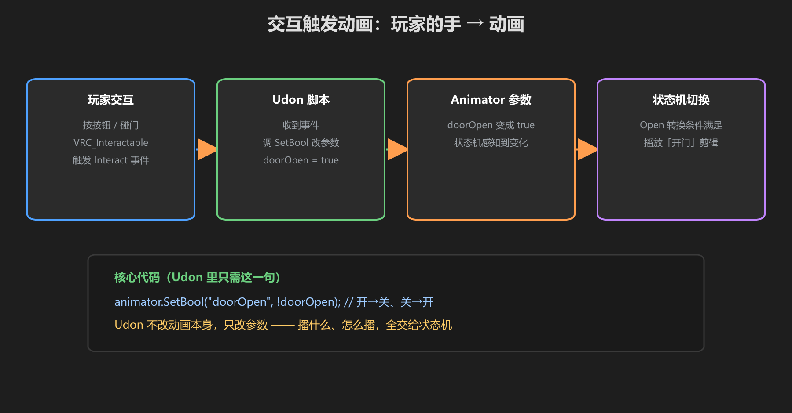
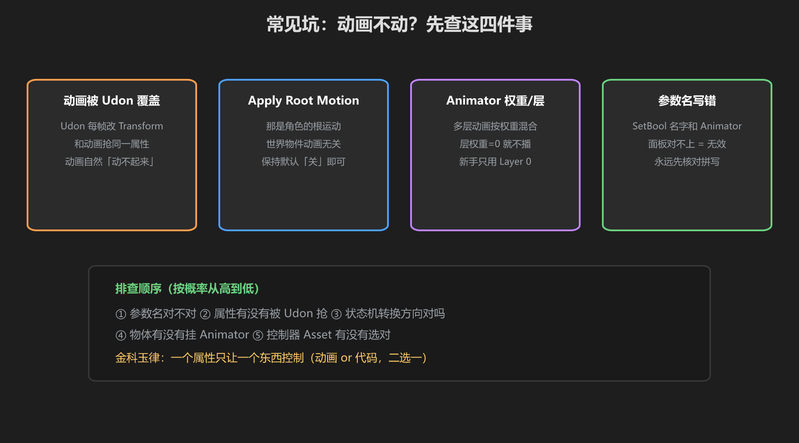

第 4 篇：物体动画与交互 — 开门、按钮反馈
动画做出来是为了"被触发"。这一篇把动画和 VRChat 的交互串起来：玩家碰一下 → 动画播放。
1. 交互 → 动画 的完整链路

图：Interact（玩家操作）→ Udon（处理）→ SetBool → Animator → 动画切换
- 玩家交互：VRC_Interactable / UIShape 被按、或碰撞触发
- Udon 组件：收到信号，判断逻辑（状态、权限）
- SetBool：把参数写给 Animator
- Animator：根据参数条件切换状态和动画
这条链路正好对应你项目的架构：Trigger（Interact）→ SignalSender（路由）→ Component（Udon 逻辑）→ Animator（表现）。
2. 按钮反馈动画
除了功能动画，别忘了"反馈动画"——按钮按下要有下沉/变色，门开了要有灯亮。反馈动画让世界"活"：
- 按下反馈：按钮 Clip 下移 2cm，0.1s
- 状态反馈：灯、提示条随开关变色
- 声音配合：动画切换时播音效（AudioSource，见《音频教程》）
3. 常见坑

图：Udon 抢动画控制、参数名不一致、Transform 冲突
| 坑 | 现象 | 解法 |
|---|---|---|
| Udon 和动画抢控制 | 脚本每帧改位置，动画不生效 | 同一属性别同时被动画和脚本写 |
| 参数名不一致 | SetBool 没反应 | 核对 Animator 里的参数名（不报错！） |
| 多 Animator 冲突 | 子物体动画被父物体影响 | 动画只动自己的 Transform |
黄金法则：一个属性，一个主人。要么动画管，要么脚本管，别两个都碰同一个 Transform。
学前检查清单
- 做了一条 Interact → Udon → Animator 的链路
- 给按钮加了按下反馈动画
- 知道"一个属性一个主人"的黄金法则